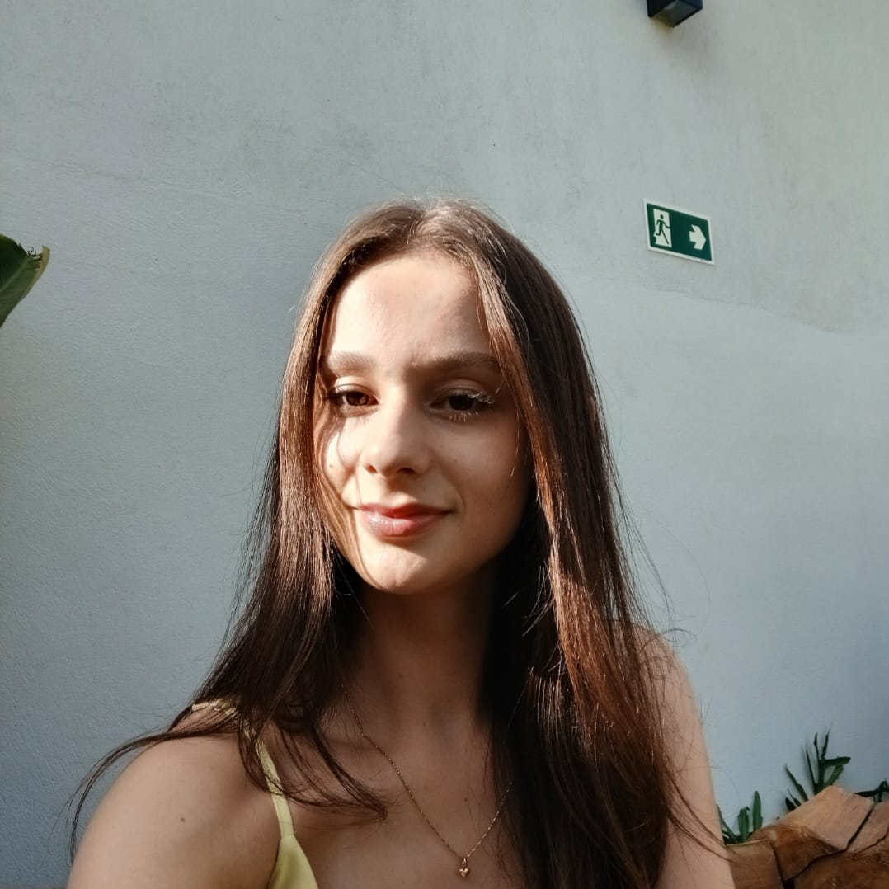

Julia Fialho
Construindo arquiteturas resilientes com C# / .NET e desbravando o mundo real com Visão Computacional em Python & YOLOv8.

Resumo Profissional
Arquitetura de Software & Inteligência Artificial
Sou graduanda em Sistemas de Informação pela PUC Minas. Minha jornada une a precisão cirúrgica de sistemas backend robustos com a pesquisa aplicada no domínio de Inteligência Artificial.
Atuo projetando arquiteturas utilizando C# / .NET Core para orquestrar dados eficientemente, além de implementar redes neurais convolucionais focadas em visão computacional (YOLO, OpenCV, PyTorch) voltadas para o ambiente corporativo e médico.
Código Limpo
SOLID, Clean Architecture
Inovação
Evolução Contínua
Tecnologias
O meu Ecossistema Técnico
Backend Development
C#, ASP.NET Core, APIs RESTful, Entity Framework Core e injeção de dependências.
Computer Vision
Visão Computacional aplicada com YOLOv8 para rastreamento de alta velocidade, PyTorch e OpenCV.
Persistência & Dados
Modelagem relacional inteligente, performance em consultas pesadas SQL Server e arquitetura ORM.
DevOps & Cloud
Controle de versão robusto no Git, fluxos de CI/CD para deploy seguro de microsserviços na Vercel e Azure.
Portfólio
Sistemas em Destaque
Hospedados em ambiente de alta disponibilidade para acesso imediato e validação arquitetural.
 Computer Vision
Computer Vision
YOLOv8 Instrumentos Cirúrgicos
Plataforma de visão computacional de ponta para ambientes médicos. Analisa fluxos de vídeo em tempo real para rastrear, contar e catalogar instrumentos no pré e pós operatório, mitigando em até 99.4% o risco de esquecimento acidental.
 Backend Architecture
Backend Architecture
VisionFinance Hub
Solução arquitetural corporativa para contabilidade e relatórios automatizados de investimentos. Construída sob os princípios da Arquitetura Limpa (Clean Architecture), o ecossistema processa fluxos complexos em milissegundos.